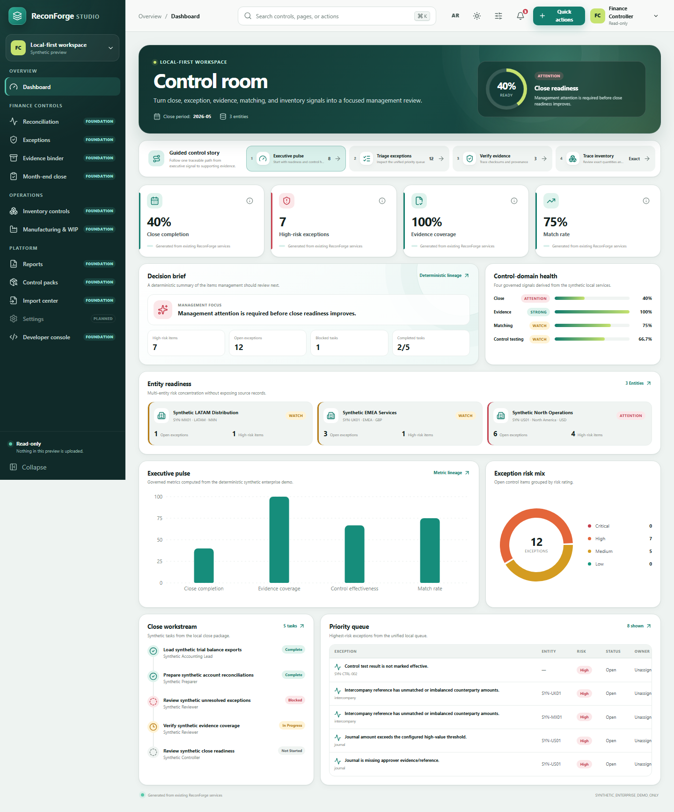
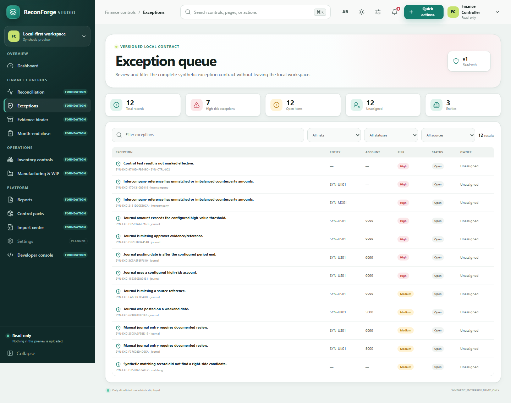
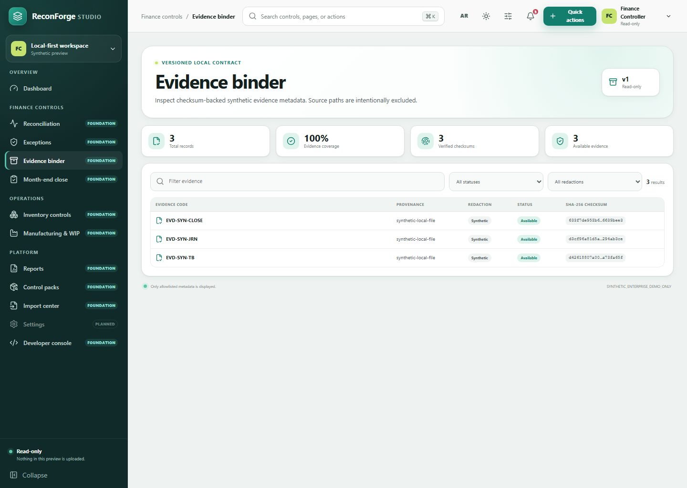

The Problem
Finance, audit, and operations teams often reconcile stock, GL, work orders, and evidence using scattered ERP exports, manual spreadsheets, and incomplete review trails.
The Solution
ReconForge turns local CSV/XLSX exports into deterministic reconciliation outputs, review registers, evidence binders, client handoff packs, and period comparisons without requiring cloud upload.
Project Status
Current release: v0.6.1 - Pilot Readiness Hardening. ReconForge ERP is an early-stage, pilot-ready open-source toolkit. It is export-based, does not claim direct ERP connectors, and does not claim legal, tax, audit, or compliance certification.
Product Workflow
- Export ERP data locally.
- Validate and inspect mappings.
- Run reconciliation and control packs.
- Review exceptions in Studio.
- Generate evidence, trends, and client handoff outputs.
Screenshots



10-Minute Demo
reconforge demo run --output output/demoOpen the management pack, executive report, dashboard, evidence binder, and client pack from the generated output folder.
Who It Is For
ERP consultants, internal audit teams, finance controllers, inventory managers, and founders preparing careful pilot conversations around export-based reconciliation.
Local-First Security
Core workflows run from local files. Client packs can use redaction controls and checksum manifests, but users remain responsible for privacy review before sharing outputs.
Pilot Offer Foundation
The repository includes a pilot proposal template, onboarding checklist, synthetic case studies, and service-package hypotheses. No production customer adoption or savings claims are made.
Disclaimer
ReconForge does not provide legal, tax, regulatory, or audit advice. It does not certify financial statements and does not replace qualified professional judgment.